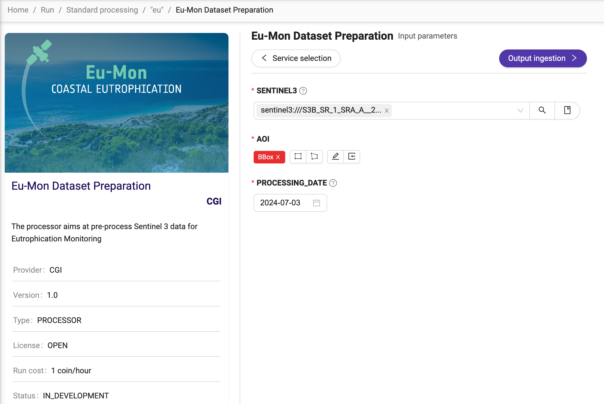
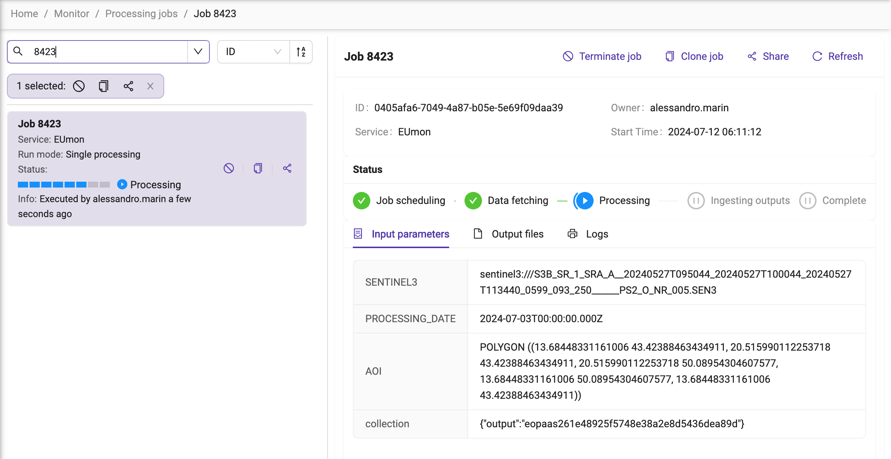

Process some data
Exploring services
Explore the available services. You can:
Click on Open processing page.
See the list of “Last used services”. Note that it will be likely empty during the first time access.
Click on Explore all services
See a page similar to:
This is the list of services available for the user. In the example above, there is just one service, but they can be more. For this reason, there are some controls allow filtering and sorting. On the left-hand side, the Service Type and Owner allows filtering of the services based on these attributes. On the right-hand side, a control allows sorting by Name and Service Type.
Service Type
The Service Type control allows filtering for Processor, Parallel Processor, Application, FTP Service, WPS Service. Here’s the difference:
Processor, a service running in batch mode to process one input.
Parallel Processor, same as processor, but running against multiple inputs.
Application, an interactive application, like SNAP or QGIS.
FTP Service and WPS Service will be deprecated soon and no longer available as an option.
Running a service
Once selected a service, click on Run service, and this will provide an interface to provide the inputs for the selected service. For example:
In the example above, the service requires 3 inputs: SENTINEL3, AOI, and PROCESSING_DATE.
Whilst detailed guidance on the services is available in Processing Services, the input with the lens icon deserves an attention. In fact, it provides a control to select it from the catalogue(s) of data, in a user-friendly manner. The input can be selected from the EDEN catalogue, Reference data (i.e., user-uploaded data) or Output products of other runs.
After providing all the inputs, click on Output ingestion. It allows the user to select the folder where to store the processing outputs. Please note that some services produce multiple output types. In such a case, it is also possible to select a different folder for each of them.
Click on Run service. A popup message will inform about the cost of the processing in terms of credits (or “coins”).
Click on Continue. An interface similar to the following one will allow to monitor the execution of the service:
Detailed guidance on how to monitor the execution of a service and access the processing results is available in Monitor your processing.